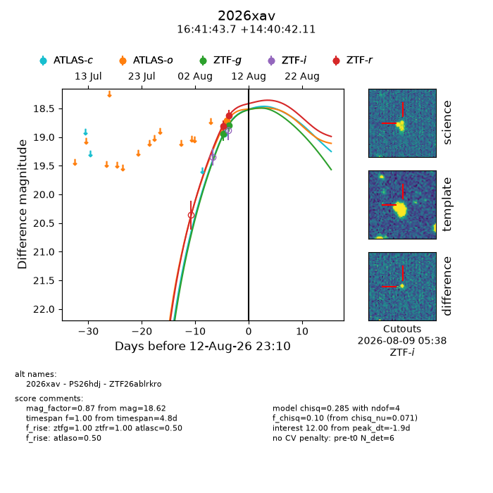
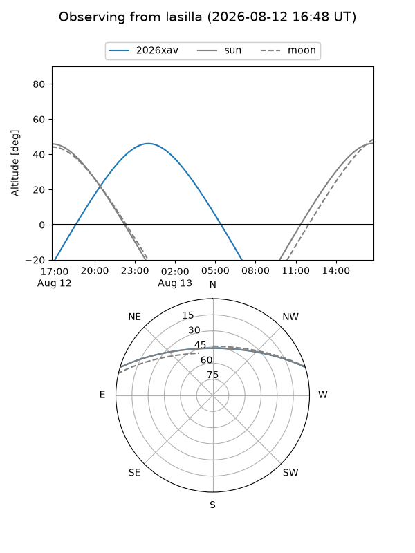
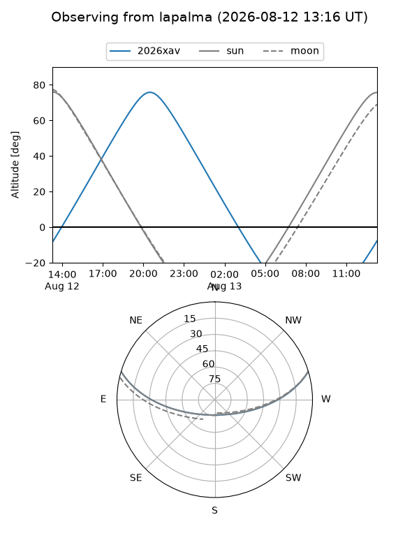
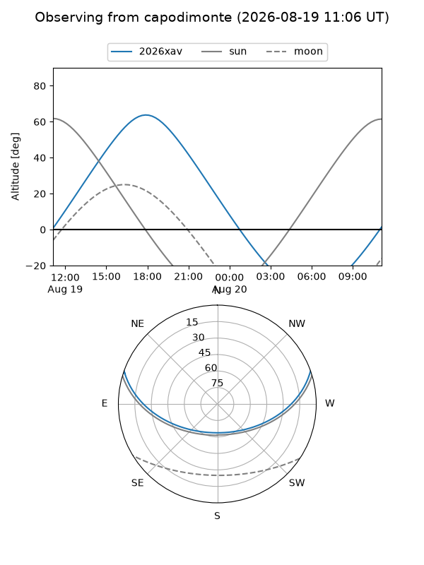
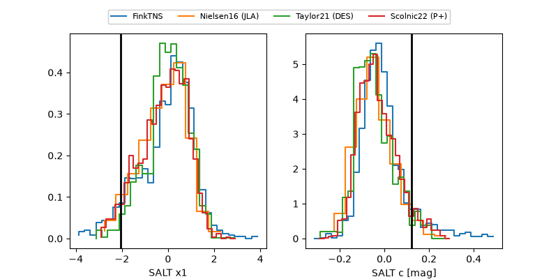

2026xav
Target 2026xav at 2026-08-12 23:13
Aliases and brokers:
FINK-ZTF: ztf.fink-portal.org/ZTF26ablrkro
Lasair-ZTF: lasair-ztf.lsst.ac.uk/objects/ZTF26ablrkro
ALeRCE-ZTF: alerce.online/object/ZTF26ablrkro
YSE-PZ: ziggy.ucolick.org/yse/transient_detail/2026xav
TNS name: wis-tns.org/object/2026xav
Direct TNS query: direct search
alt names
ZTF26ablrkro (ztf,fink_ztf)
2026xav (tns,yse)
PS26hdj (panstarrs)
Coordinates:
equatorial (ra, dec) = 250.4320,+14.67836
equatorial (HMS+DMS) = 16:41:43.69,+14:40:42.11
galactic (l, b) = (32.1590,+35.25432)
Flags:
TNS type: nan
peak dt: -1.9
Photometry:
last atlasc=18.94, atlaso=18.72, ztfg=18.79, ztfr=18.62
1 atlasc, 1 atlaso, 2 ztfg, 2 ztfr detections
Lightcurve

Visibility



Additional plots
